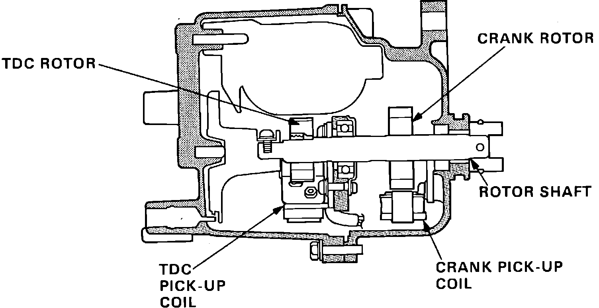

Crankshaft Position Sensor: Description and Operation
TDC/CRANK Sensor Operation:

PURPOSE
The CRANK sensor determines timing for fuel injection and ignition of each cylinder and detects engine RPM. The CYL sensor detects the position of No. 1 cylinder for sequential fuel injection to each cylinder.
LOCATION
The TDC/CRANK sensor is built into the distributor which is driven by the intake camshaft.
CONSTRUCTION
The unit consists of two separate sensors, one for the TDC signal and one for the CRANK signal. Both sensors use a pickup coil and rotor to generate a low voltage signal to the ECU.
OPERATION
The TDC signal is used to determine ignition timing at start-up and if the CRANK signal becomes abnormal. The ECU receives information from the TDC sensor. The CRANK sensor is used to determine ignition and fuel injection timing while the engine is running. It's signal is also used by the ECU to determine engine rpm.